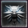

Nyller
Eduardo Rio Grande do Sul, Brazil
we're more ghosts than people
Nível 31
A whirlwind of rage and steel
500 XP
Editar Perfil
Eduardo Rio Grande do Sul, Brazil
we're more ghosts than people
A whirlwind of rage and steel
500 XP
Editar Perfil